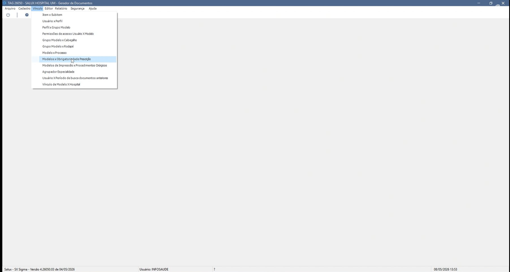
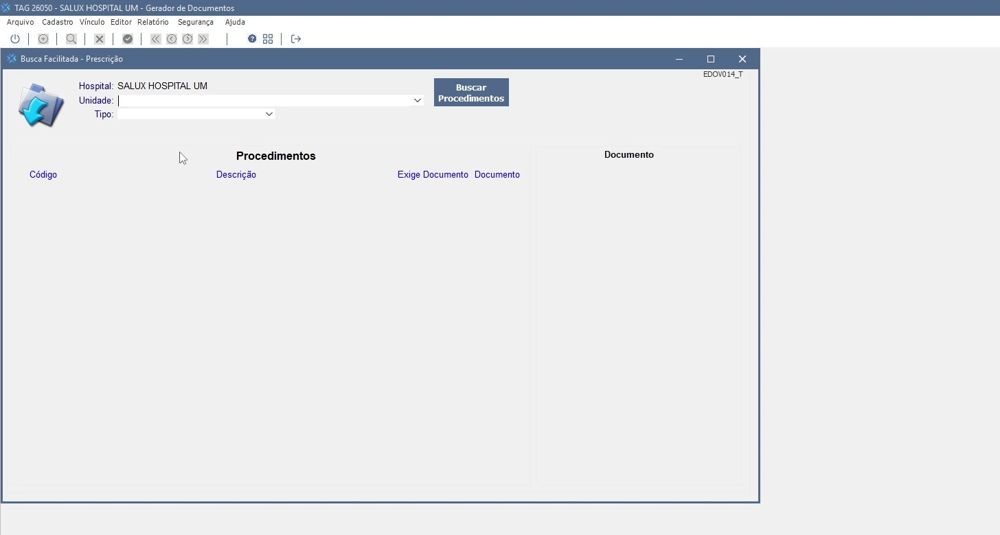
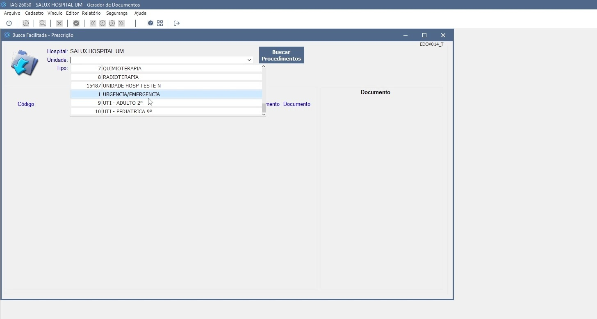
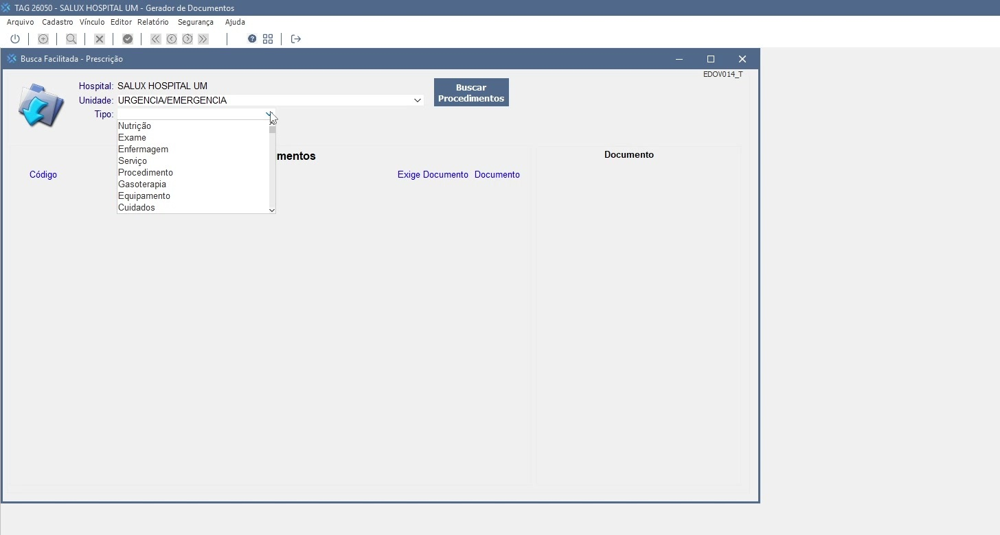
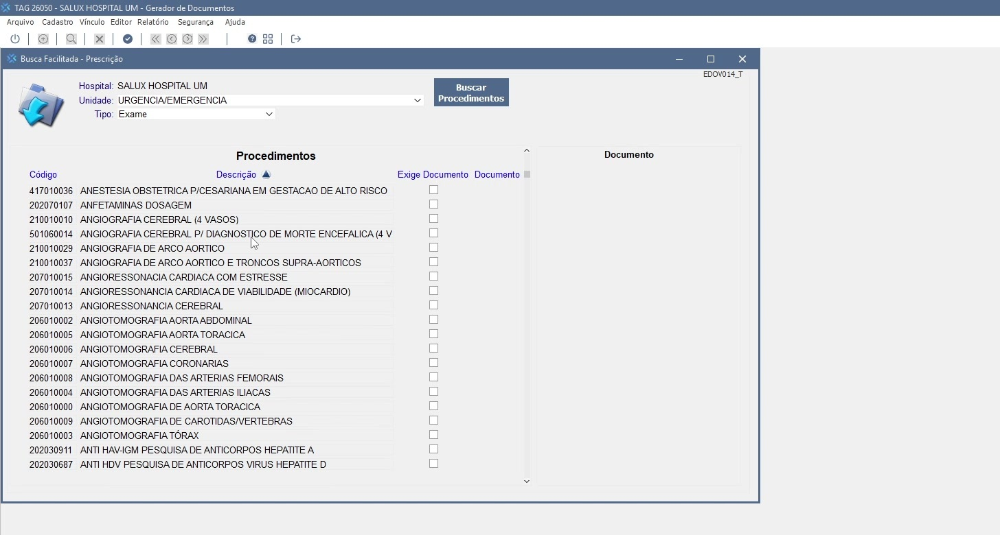
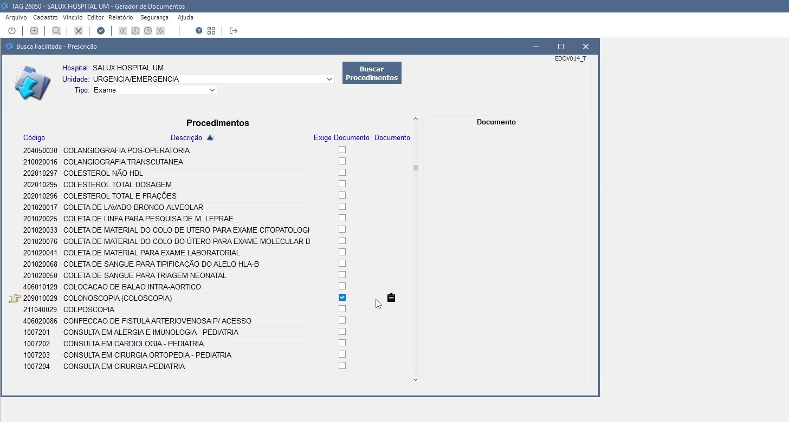
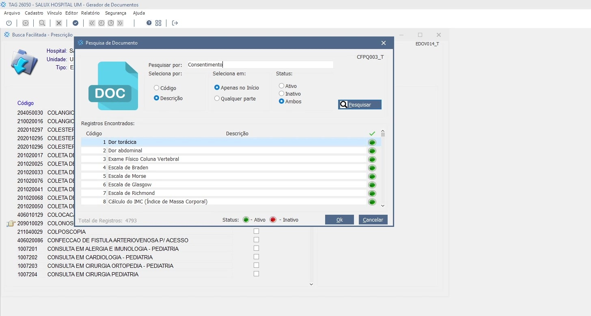
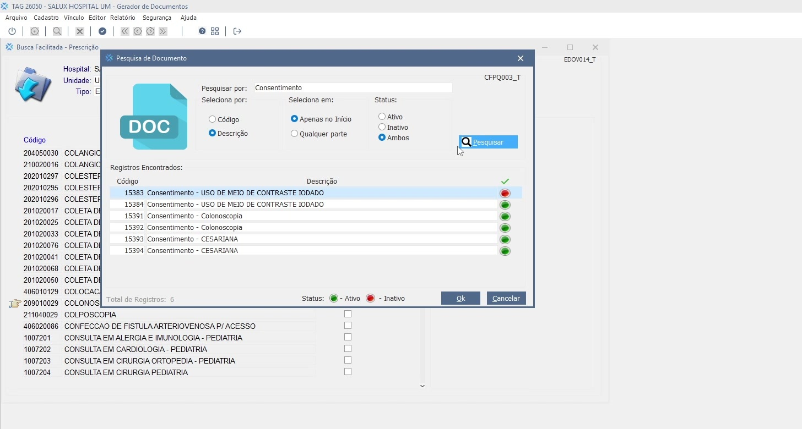
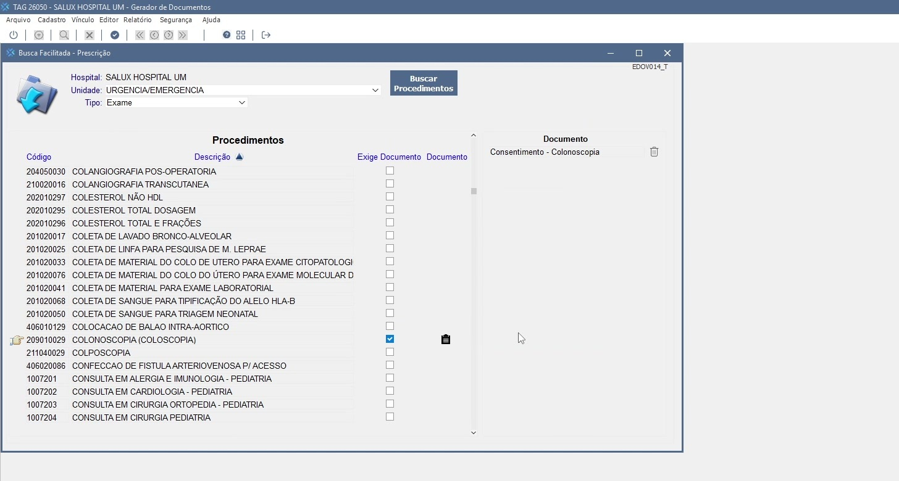
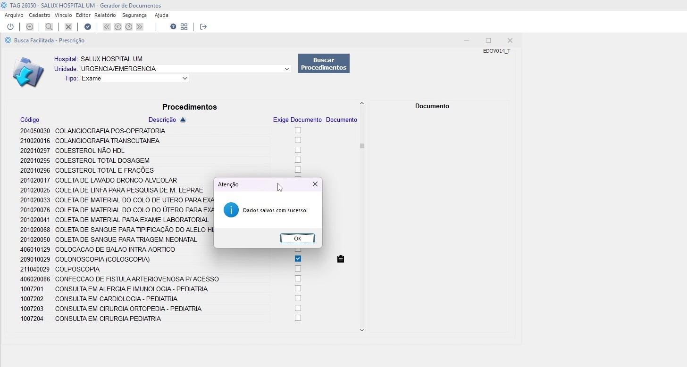

Voltar ao Índice de Manuais
INTRODUÇÃO
O módulo Gerador de Documentos é responsável pela criação, manutenção e vinculação dos modelos de documentos
utilizados nas diversas rotinas assistenciais e administrativas do hospital, permitindo ao gestor padronizar a documentação clínica e jurídica do serviço.
Dentre as funcionalidades disponíveis no módulo, a Configuração de Prescrições x Documentos Obrigatórios tem
papel estratégico no processo assistencial, pois garante que, ao prescrever determinados procedimentos, o sistema solicite automaticamente o preenchimento
do documento configurado (por exemplo, Termo de Consentimento), contribuindo para a conformidade clínica, jurídica e regulatória.
A funcionalidade permite ao usuário definir, por Hospital, Unidade e Tipo de
procedimento, quais procedimentos exigirão documento obrigatório no momento da prescrição, e qual o documento (modelo) será vinculado a cada um deles.
Esses parâmetros são utilizados pelo módulo de Prescrição para acionar a obrigatoriedade no fluxo de uso.
Vamos conhecer a funcionalidade Configuração de Prescrições x Documentos Obrigatórios?
A tela Busca Facilitada - Prescrição (EDOV014_T) tem como principal finalidade possibilitar a configuração
dos procedimentos que exigem documento obrigatório no momento da prescrição, bem como o vínculo do documento (modelo) que será apresentado ao usuário
durante a execução desse fluxo.
Para o correto funcionamento da configuração, é necessário que estejam previamente cadastrados no sistema os
Procedimentos (Exames, Cuidados, Serviços etc.) e os Documentos (Modelos) que serão vinculados como obrigatórios.
Esses cadastros são executados em telas próprias do sistema e devem estar ativos no Hospital logado.
O usuário também precisa ter permissão de acesso ao módulo Gerador de Documentos e ao menu
Vínculo › Modelos x Obrigatoriedade Prescrição.
Para acessar a tela de configuração, devemos acessar o menu Vínculo e logo em seguida o item
Modelos x Obrigatoriedade Prescrição.


Ao abrir a tela Busca Facilitada - Prescrição, o usuário deverá selecionar a Unidade de
atendimento e o Tipo de procedimento desejados, parâmetros que filtrarão os procedimentos disponíveis para configuração no contexto
do hospital logado.
Os principais campos da tela são:
| Hospital |
Apresenta o nome do hospital logado (ex.: SALUX HOSPITAL UM). Campo somente leitura, preenchido automaticamente pelo sistema. |
| Unidade |
Lista suspensa que permite selecionar a unidade de atendimento (ex.: AMBULATÓRIO, AMBULATÓRIO ELETIVO,
AMBULATÓRIO ONCO, QUIMIOTERAPIA, RADIOTERAPIA, URGÊNCIA/EMERGÊNCIA,
UTI - ADULTO, UTI - PEDIÁTRICA). |
| Tipo |
Lista suspensa que permite selecionar o tipo de procedimento (Nutrição, Exame, Enfermagem,
Serviço, Procedimento, Gasoterapia, Equipamento, Cuidados). |
| Buscar Procedimentos |
Botão que carrega a lista de procedimentos compatíveis com os filtros selecionados de Unidade e Tipo. |
| Procedimentos |
Grade que apresenta os procedimentos retornados, com as colunas Código, Descrição,
Exige Documento (checkbox) e Documento (ícone de vínculo). |
| Documento |
Painel à direita da tela, apresenta o documento atualmente vinculado ao procedimento selecionado, com possibilidade de remoção pelo ícone
. |
No campo Unidade, o usuário deverá clicar na lista suspensa e selecionar a unidade desejada para a configuração.
As unidades apresentadas são as cadastradas e ativas no hospital logado.

No campo Tipo, o usuário deverá clicar na lista suspensa e selecionar o tipo de procedimento que deseja
configurar. O tipo refina a lista de procedimentos apresentados na grade.

Após selecionar a Unidade e o Tipo, o usuário deverá clicar no botão
Buscar Procedimentos. O sistema apresentará na grade Procedimentos todos os itens compatíveis com os filtros
informados.

A grade de procedimentos pode ser ordenada pela coluna Descrição clicando no cabeçalho. Uma seta indicativa
é exibida para sinalizar a direção da ordenação. A barra de rolagem lateral permite navegar por listas extensas.
Para indicar que um procedimento exige o preenchimento de um documento obrigatório no momento da prescrição, o usuário deverá
marcar o checkbox correspondente na coluna Exige Documento, na linha do procedimento desejado (ex.:
COLONOSCOPIA (COLOSCOPIA), código 209010029).
Ao marcar o checkbox, o sistema habilita o ícone na coluna
Documento, indicando que o vínculo de documento poderá ser feito.

Atenção!!!
Ao marcar Exige Documento, é obrigatório vincular um documento ao procedimento. Caso o vínculo não seja
feito, o sistema poderá apresentar comportamento inconsistente no fluxo de prescrição. Para desativar a obrigatoriedade, basta desmarcar o
checkbox e salvar.
Após marcar o checkbox Exige Documento, o usuário deverá clicar no ícone exibido na coluna
Documento. O sistema abrirá a tela Pesquisa de Documento (CFPQ003_T), que permite localizar e selecionar o
documento que será vinculado ao procedimento.

Na tela Pesquisa de Documento, os campos disponíveis são:
| Pesquisar por |
Campo de texto livre para informar parte do nome ou código do documento desejado (ex.: Consentimento). |
| Seleciona por |
Define o critério da pesquisa: Código (busca pelo código numérico do documento) ou Descrição
(busca pela descrição/nome). |
| Seleciona em |
Define onde aplicar o critério informado: Apenas no Início (a busca considera apenas o início do texto) ou
Qualquer parte (a busca considera o termo em qualquer posição do texto). |
| Status |
Permite filtrar os documentos pelo status: Ativo, Inativo ou Ambos. |
| Pesquisar |
Botão que executa a busca conforme os parâmetros informados. |
| Registros Encontrados |
Lista os documentos retornados pela busca, com as colunas Código, Descrição e indicador visual de status
( Ativo,
Inativo). |
| Ok / Cancelar |
Ok confirma a seleção do documento marcado e o vincula ao procedimento. Cancelar fecha a tela sem realizar o vínculo. |
Para realizar a pesquisa, o usuário deverá digitar o termo desejado no campo Pesquisar por (ex.:
Consentimento), selecionar o critério em Seleciona por, definir Seleciona em e o
Status, e clicar no botão Pesquisar. O sistema apresentará os documentos que atendem aos critérios.

Em seguida, o usuário deverá selecionar o documento desejado clicando sobre a linha (ex.:
15392 - Consentimento - Colonoscopia) e clicar em Ok para confirmar. O documento selecionado passará a ser exibido
no painel Documento, à direita da grade de procedimentos.

Informativo!!!
A tela Pesquisa de Documento utiliza a base unificada de modelos do Gerador de Documentos.
Documentos com indicador vermelho (Inativos) podem ser visualizados quando o filtro Status estiver como
Ambos ou Inativo, mas a recomendação operacional é vincular apenas documentos com status Ativo.
Após realizar a marcação dos checkboxes Exige Documento e o vínculo dos documentos correspondentes, o usuário
deverá clicar no botão na barra superior para gravar as configurações. O sistema
apresentará a mensagem "Dados salvos com sucesso!". Basta clicar em OK para finalizar.

Caso seja necessário remover o vínculo de um documento previamente associado a um procedimento, o sistema disponibiliza
duas formas de remoção:
| Pelo painel Documento |
Clique no ícone exibido ao lado do documento atualmente vinculado.
O sistema remove o vínculo daquele procedimento. |
| Pela coluna Exige Documento |
Desmarque o checkbox da linha do procedimento. O sistema remove tanto a obrigatoriedade quanto o vínculo do documento associado. |
Após realizar qualquer uma das ações acima, o usuário deverá clicar em
na barra superior para que a remoção seja efetivada.
Atenção!!!
A inativação de um documento previamente vinculado não remove automaticamente a obrigatoriedade configurada.
É responsabilidade do gestor revisar os vínculos sempre que houver mudança de status (ativo/inativo) de um documento.
A configuração realizada nesta tela define a obrigatoriedade do documento no momento da prescrição. Procedimentos não marcados
como Exige Documento continuarão prescritíveis sem solicitação automática de documento associado.
A combinação Hospital + Unidade + Tipo é determinante para a busca de procedimentos. Sempre revise os filtros
antes de iniciar uma nova configuração para evitar marcações em contextos incorretos.
Recomenda-se padronizar a nomenclatura dos documentos (ex.: "Consentimento - <Nome do Procedimento>") para
facilitar a busca e a manutenção dos vínculos ao longo do tempo.
Para fins de auditoria e rastreabilidade, registre as configurações em controle interno (planilha de governança ou
changelog), informando data, usuário responsável, hospital, unidade, tipo, procedimento e documento vinculado.
A funcionalidade integra-se ao módulo de Prescrição: ao prescrever um procedimento marcado como
Exige Documento, o sistema solicita o preenchimento do documento configurado, garantindo conformidade com normas internas e externas
(regulamentação sanitária, ANVISA, CFM, requisitos de qualidade hospitalar).